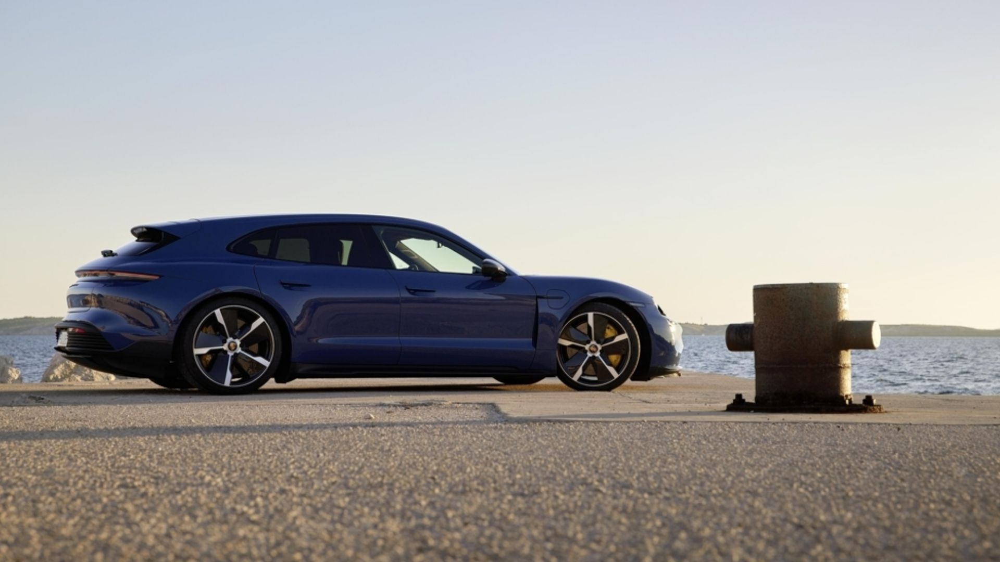

Сегодня в Беларуси стартовал прием заказов на новенький универсал Porsche Taycan Sport Turismo. Об этом нам сообщил импортер немецкого бренда. Вместе со спортивным седаном и моделью Cross Turismo линейка Taycan теперь насчитывает три варианта кузова.
По замыслу создателей, универсал предназначен для тех, кто хотел бы совместить практичность Taycan Cross Turismo с динамикой спортивного седана Taycan. Первой в семействе Taycan Sport Turismo в конце февраля 2022 года на рынок выйдет модель GTS, а уже в середине марта, спустя всего три недели, за ней последуют и другие версии. В качестве нового элемента дополнительного оборудования для моделей Taycan Sport Turismo предлагается панорамная крыша с функцией Sunshine Control. Ее особенностью является электрическая система защиты от слепящего солнца.
По нашей информации, уже сейчас для заказа доступна модель Taycan GTS Sport Turismo мощностью 517 л. с. с полным приводом. Цена — от 129 319 евро по курсу.
С весны будут доступны следующие версии:
- Sport Turismo мощностью 326 л. с. с задним приводом. В качестве опции предлагается высокоэффективная батарея Plus и повышение мощности до 380 л. с. Цена — от 92 736 евро;
- Taycan 4S Sport Turismo мощностью 435 л. с. с полным приводом. В качестве опции предлагается высокоэффективная батарея Plus и повышение мощности до 490 л. с. Цена — от 114 565 евро;
- Taycan Turbo Sport Turismo мощностью 625 л. с. с полным приводом. Цена — от 163 296 евро;
- Taycan Turbo S Sport Turismo мощностью 625 л. с. с полным приводом. Цена — от 198 245 евро.
«С выходом на рынок Sport Turismo в качестве третьего кузовного варианта в модельной линейке нашего электроприводного спорткара появится универсальный автомобиль, сочетающий в себе высокую практичность и спортивный характер, — считает Кевин Гик, руководитель модельного ряда Taycan. — Я уверен, что новая модельная версия продолжит историю успеха Taycan. Особенно привлекательным мне кажется разносторонний характер пяти модификаций Sport Turismo: от исключительно маневренного заднеприводного варианта до сверхмощной версии Turbo S».
Модель Taycan Turbo S Sport Turismo разгоняется с места до 100 км/ч за 2,8 секунды. Ее максимальная скорость составляет 260 км/ч. Самым большим запасом хода (до 498 километров по WLTP) обладает модель Taycan 4S Sport Turismo. Как представители линейки Taycan нового модельного года полноприводные модели Sport Turismo отличаются исключительно эффективной стратегией привода.